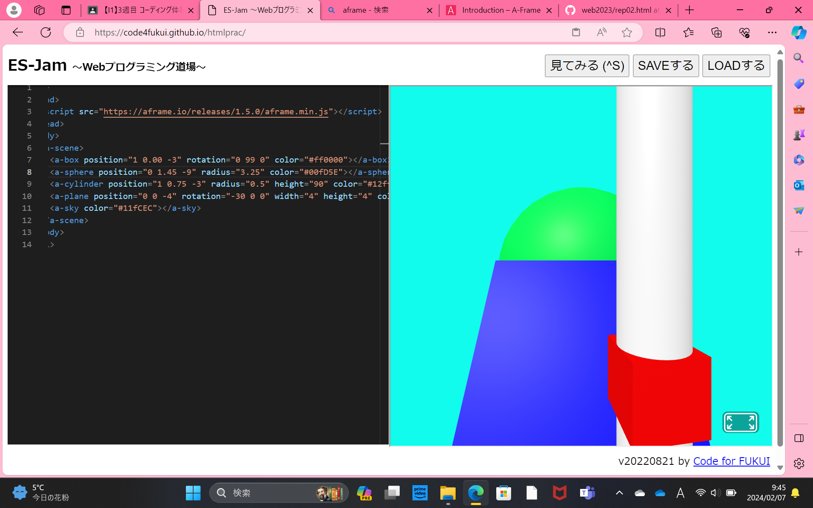

第3週目
3-1 JavaScript体験：VR空間を作る
自作した３次元空間
1.内容
1週目に作成した自作ホームページの中で実行できるプログラム言語のJavaScriptを体験する。まず、Webプログラミング道場のサイトを開く。つぎにA-Frameのホームページを開き、［GET STARTED］をクリックする。ページの上にあるJavaScriptのコードをWebプログラミング道場のページにペーストする。
2.感TARTE 色の番号がわからなかったので思った通りの感じにはできませんでしたが、オリジナル感は出たと思います。色の番号とかも覚えてみたいです。
1週目に作成した自作ホームページの中で実行できるプログラム言語のJavaScriptを体験する。まず、Webプログラミング道場のサイトを開く。つぎにA-Frameのホームページを開き、［GET STARTED］をクリックする。ページの上にあるJavaScriptのコードをWebプログラミング道場のページにペーストする。
2.感TARTE 色の番号がわからなかったので思った通りの感じにはできませんでしたが、オリジナル感は出たと思います。色の番号とかも覚えてみたいです。
3-3 JavaScriptプログラムの３次元空間の体験

1.内容
3週目にコーティング体験をしたA-Frameというパッケージを利用することで作成できるインタラクティブなプログラムの利用体験をする。
2.感想
空間から離れてしまい、白い空間へ移動してしまい、困ることもありましたが、無事に元の空間まで戻れました。ボールをつかんだりできるのは楽しかったです。
3週目にコーティング体験をしたA-Frameというパッケージを利用することで作成できるインタラクティブなプログラムの利用体験をする。
2.感想
空間から離れてしまい、白い空間へ移動してしまい、困ることもありましたが、無事に元の空間まで戻れました。ボールをつかんだりできるのは楽しかったです。